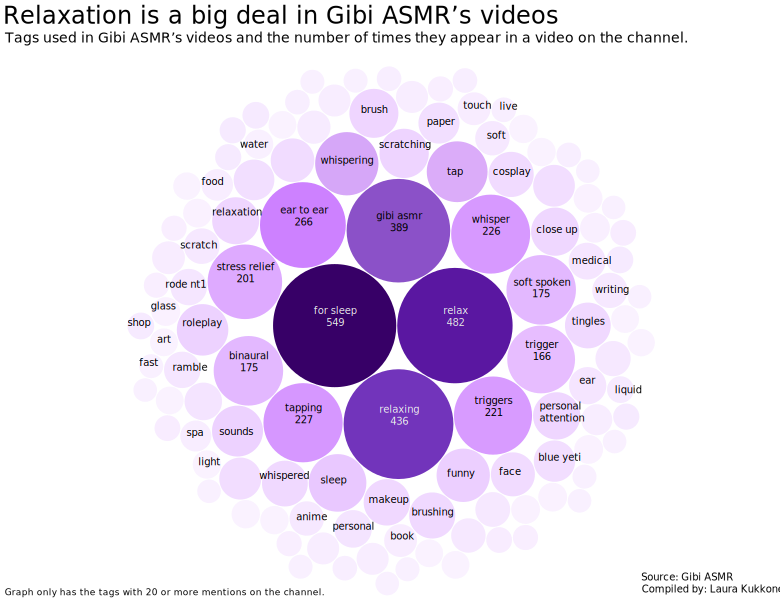

Gibi ASMR is one of the most popular ASMR accounts on Youtube. The most watched Gibi ASMR video has over 56 million views. Photo: Laura Kukkonen
Whispering, scratching microphones and tapping various objects. There are millions of people across the internet watching tens of billions of ASMR videos every year. Science has begun to shed light on the effects of ASMR, but much remains to be studied.
Life can throw you into overwhelming situations that cause anxiety and can make it harder to fall asleep at night. This happened to me in grad school, and I know I’m not alone. What has helped me keep a regular sleeping schedule are Youtube videos in which a stranger whispers into my ears and holds different objects that make different, pleasant sounds.
Most of the time these ASMR videos make me sleepy, relaxed, and sometimes I even get a nice tingling feeling on the back of my head, similar to a sensation when I see exceptionally good live music, especially singing. This effect is called autonomous sensory meridian response (ASMR).
Based on general life experience, some people consider this phenomenon alien and weird. But there are a lot of people like me. According to information released by Youtube, videos related to ASMR got more than 65 billion views on the platform in 2021.
One of the most popular ASMR channels on Youtube is Gibi ASMR. In February 2024, her channel has 4.9 million subscribers with over 2 billion views.
Gibi ASMR has published 1,269 videos since the year 2016. These videos have almost 4,800 different tags ranging from themes like anime, medical and funny, to so-called ASMR triggers like tapping or whispering. The most common tags are about relaxation and sleep, suggesting that’s what a lot of viewers come looking for on Gibi’s channel.
As ASMR videos have grown in popularity, the phenomenon has become more widely known in the last few years, says Giulia Poerio, a lecturer at the University of Sussex. She has been researching ASMR as a sensation for years now. She reminds us that ASMR is not only about the videos.
“The feeling itself existed before the internet and is something that people do experience in their everyday lives,” Poerio says.
“There's often this conflation between ASMR content and ASMR as an emotional experience. And my view is that ASMR is a really interesting, complex emotional experience that can tell us a lot about how the sensory world affects our emotional experiences.”
Some people don't understand ASMR simply because they don't get the ASMR sensations. According to Poerio, there are just rough estimations about how common it is to be an ASMR responder, a person who experiences ASMR.
“We think perhaps 20 percent of the population.”
The research around ASMR is still relatively young and there are a bunch of things we don’t know about it. For example, why it is so relaxing and helps some people to sleep. Poerio says that nobody has actually tested this specific question.
“The question for me is whether or not it actually works. And if it does help with sleep, how does that work?”
“We have some initial research that it is associated with physiological indices of relaxation. When people watch ASMR, they tend to show reductions in heart rate. And that might mean it reduces their physiological arousal, which would help them get to sleep. But there's probably lots of things going on,” Poerio says.
It's also unclear why some people get “the tingles” and others don’t, or whether or not you could train yourself to experience ASMR. Poerio says that ASMR typically emerges during development, before hitting puberty.
“That suggests to me that it has a developmental origin, so I suspect that it’s something that develops early in development and has a tendency to stay with you. That's not to say it might not dampen over time,” Poerio says.
“I don't know whether you could train yourself to experience ASMR. I think that a lot of it is kind of inbuilt or emerges across development in terms of how your brain is developing.”
People tend to use ASMR videos for different reasons, Poerio says. In addition to sleeping and relaxing, one might listen to ASMR in the background while studying, for example. What Poerio is especially interested in is the sensation and experience of ASMR, which is separate from the audiovisual world of ASMR videos.
“A lot of people often think ASMR is an audiovisual phenomenon. My view is much more tactile, and not only because audiovisual stimuli can induce a tactile response, but also because predominantly the strongest and most intense and reliable trigger is touch,” Poerio says.
“What is often happening in an ASMR video is the simulation of touch.”
This is one of the aspects of ASMR that make it feel a bit odd. Whispering, speaking softly, and brushing can make one feel quite intimate. But Poerio sees benefits in the growing access to ASMR videos.
“I can definitely see the benefits of being able to access this stuff on demand,” Poerio says.
Poerio is an ASMR responder. She discovered the sensation while listening to a very boring conference talk, but feeling relaxed and sleepy by the sound of the speaker's voice. She used to seek out ASMR from the real world, but now she is one of the millions of people watching ASMR videos online. During the years, ASMR has worked its way to marketing content and popular culture, and ASMR channels have become more and more professional.
“I used to wait until this would happen in everyday life and I would try and engineer situations that would let me experience this, and just hope that it would happen. And now I know exactly where to go.”
Details about this project can be found onGithub.